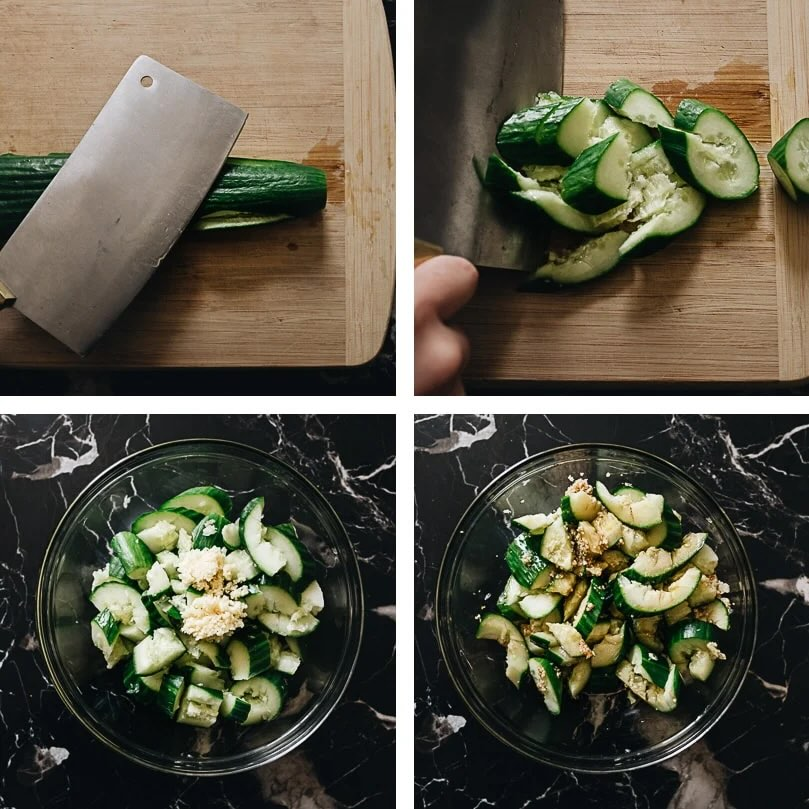
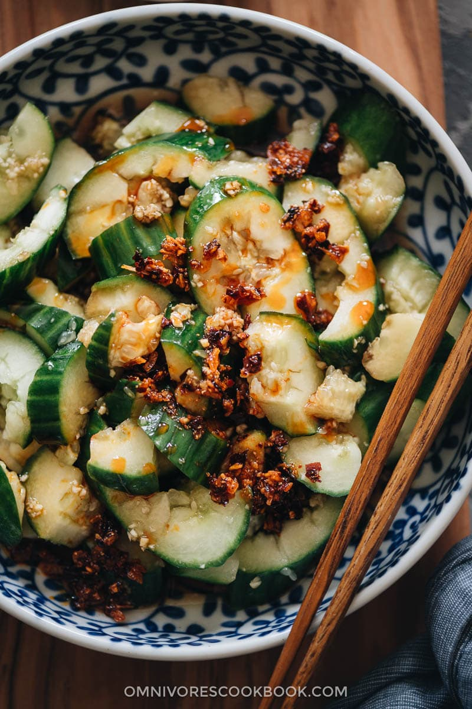
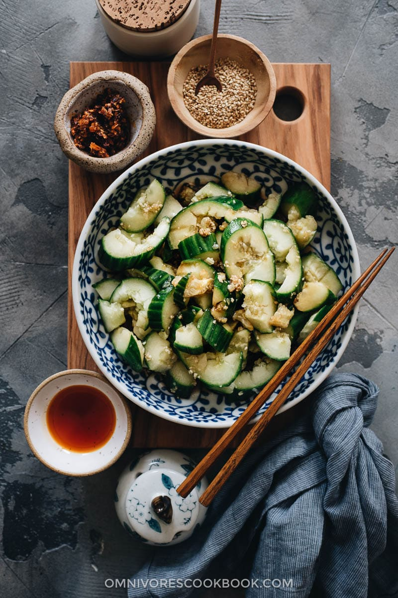

Ingredients:
Recipe:
- Dry the cucumber with a paper towel. Place the cucumber on a large cutting board and carefully use a cleaver to crush it. If you don't own a cleaver, a meat pounder will work as well. Then cut it into bite-size pieces and place them into a bowl.
- Add the garlic on top of the cucumber.
- Combine the vinegar, soy sauce, sugar, salt and sesame oil in a small bowl and mix well.
- Right before serving, pour the sauce mixture over the cucumber and mix well. (Do not add the sauce beforehand. It will cause the cucumber to lose water, and the sauce will be diluted.)
- Serve chilled. *(Optional) To give the salad an extra kick, you can drizzle some chili oil or add a spoonful of chili crisp. It makes the dish addictively good.


